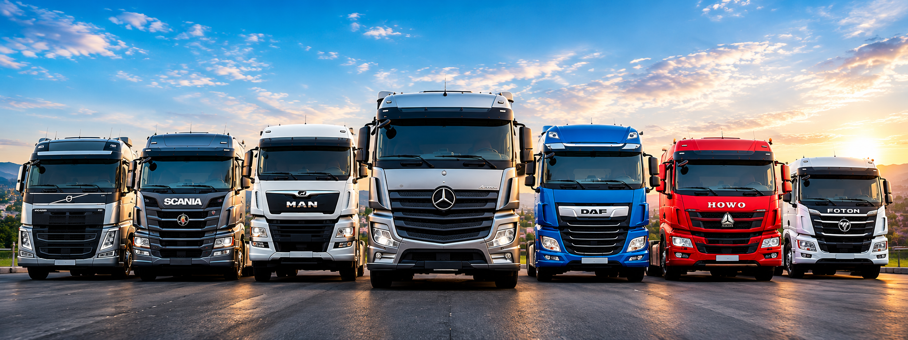
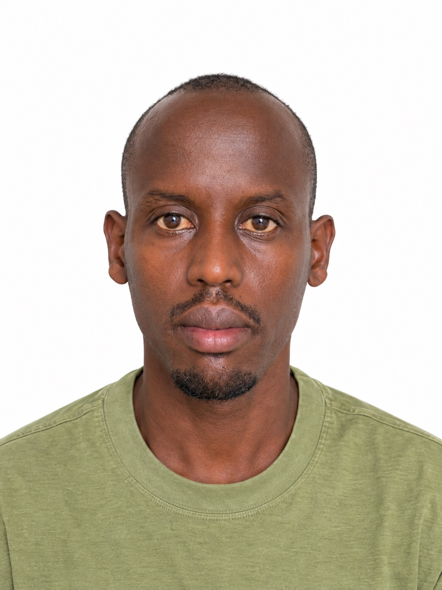

Our Mission
To provide dependable truck solutions, quality spare parts and practical technical services that help customers keep their businesses moving.
Built on hands-on experience, honest service and a commitment to helping customers find the right trucks, parts and technical support.
The journey began in 2018, when our founder worked with fellow mechanics to repair trucks, trailers and heavy vehicles wherever customers needed help. Without a fixed workshop address at the time, the team travelled to roadside breakdowns and customer premises to provide practical support.
In 2022, the founder brought the work together under T-MechaTrucks & Parts Ltd, officially establishing the company in Rwanda. Since then, our work has grown beyond repairs to include truck and trailer sales, new and quality used spare parts, diagnostics and related technical services.
We focus on understanding each customer’s situation, communicating clearly and helping them consider practical options for their vehicle and business needs.

The principles that guide our work and our relationships with customers.
To provide dependable truck solutions, quality spare parts and practical technical services that help customers keep their businesses moving.
To become a trusted partner in Rwanda’s transport sector and contribute to stronger local technical capacity and production.
Honesty, practical problem-solving, customer respect, quality workmanship and a commitment to continuous improvement.
At T-MechaTrucks & Parts Ltd, we understand that every hour your truck spends off the road can affect your business. That is why we are committed to helping you minimize downtime through dependable spare parts, professional diagnostics, timely repairs and practical technical support. Our goal is to keep your trucks operating safely, efficiently and reliably, so your business can keep moving forward.

Founder | T-MechaTrucks & Parts Ltd
The company grew from practical experience in truck and trailer repairs, working directly with customers and solving transport-related technical problems.
Building on that foundation, our founder is interested in exploring opportunities to develop local manufacturing and production in Rwanda. This includes researching the feasibility of producing useful equipment and products locally, and assessing opportunities such as stone processing where suitable.
The long-term goal is to support local skills, create more opportunities for Rwandan production and reduce dependence on imported products where local production can be practical and competitive.
We want to build on our technical experience while carefully exploring opportunities that may benefit Rwanda’s economy.
Continue building practical skills in truck repair, diagnostics, electrical systems and equipment maintenance.
Research whether selected tools, components or other useful products can be manufactured or processed locally to meet real market needs.
Evaluate future projects through market research, technical studies, lawful financing and the relevant regulatory approvals before implementation.
Whether you need a truck, spare parts or technical assistance, contact our team to discuss your requirements.